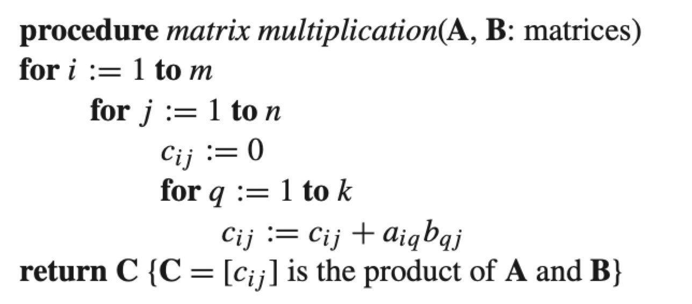

Exercise 2: Loop Runtime and Asymptotic Annotations
Exercise 2.1: Loop Runtime Analysis
Below is a matrix multiplication algorithm, where matrix A has a dimensionality of m x k , and matrix B has
a dimensionality of k x n. Regarding this: (1) Calculate the runtime,
(2) Show the tight big-O notation, and (3) Prove that your big-O notation
is correct.

Suppose that you are given n points on a planar
surface and their location, where you consider the given
locations are in form of (x,y). Regarding this: (1) Write the algorithm/pseudocode to find
the closest pair, (2) Write its python code, (3) Calculate the
runtime of the algorithm, (4) Show the big-O notation, and (5)
Provide that your big-O is correct.